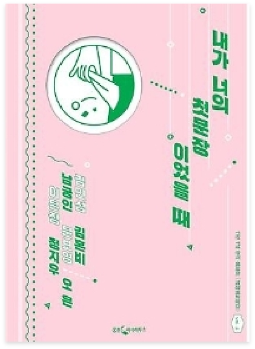

♥
내가 너의 첫문장이었을 때
-
저자 | 김민섭, 김혼비, 남궁인, 문보영, 오은, 정지우
출판사 | 웅진지식하우스
출판년도 | 2020.07.01
당신의 무료한 여름밤을 시원하게 위로할, 한순간의 기쁨과 슬픔, 두려움과 그리움
좋아서 시작한 7인 7색 에세이 연작집!
김민섭, 김혼비, 남궁인, 문보영, 오은, 이은정, 정지우... 일곱 명의 에세이스트가 에세이 연작집 『내가 너의 첫문장이었을 때』로 올여름 독자를 찾아왔다. 찬란했던 순간들은 절대 사라지지 않고 기억의 한 조각이 되어 우리 안에 오롯이 남는다. -
저자소개
등단한 순간과 시인이 된 순간이 다르다고 믿는 사람. 누가 시켜서 하는 일은 정말이지 열심히 한다. 어떻게든 해내고 말겠다는 마음 때문에 몸과 마음을 많이 다치기도 했다. 다치는 와중에 몸과 마음이 연결되어 있다는 사실을 꺠닫기도 했다. 삶의 중요한 길목은 아무도 시키지 않았던 일을 하다가 마주했다. 누가 시키지도 않았는데, 아니 오히려 그랬기에 계속해서 무언가를 쓰고 있었다. 쓸 때마다 찾아오는 기진맥진함이 좋다. -
출판사 서평
김민섭, 김혼비, 남궁인, 문보영, 오은, 이은정, 정지우... 일곱 명의 에세이스트가 에세이 연작집 『내가 너의 첫문장이었을 때』로 올여름 독자를 찾아왔다. 찬란했던 순간들은 절대 사라지지 않고 기억의 한 조각이 되어 우리 안에 오롯이 남는다. 작가들은 그떄 그 시절 우리를 웃게 하기도, 또 울게 하기도 하는 기억 속 이야기들을 한 편 한 편의 글로 길러 이 한 권의 책에 모았다. 어떤 글에선 '와하하-' 웃음을, 또 다른 글에선 '또르르-' 눈물 몇 방울을 흘리게 하는 이들의 글맛은 당신의 지친 하루를 위로하기에 충분하다.
 자세히
자세히
해당 도서는 독서퀴즈 서비스가
제공되지 않습니다.
-
피치못할피치:D2020.09.06.부자가 되기 위해 사소한 습관부터 하나씩 고쳐봐야겠다는 생각이 들었고, 저를 한 번 되돌아볼 수 있는 시간이 되어 좋았습니다^^#존리 #존리의부자되는습관 #부자를꿈꾼다 #부자되기_도전! #로또당첨
-
자두자두졸령2020.09.04.부자되고싶다아아아아아 요즘 티비에 자주 보이시는 존리님! 궁금해서 읽어봤는데, 너무 재밌었어요~#존리 #부자 #독서 #책읽기습관 #저축
-
아네모네세모네2020.09.01.괜히 베스트셀러가 아니네요! 재밌는데 제가 과연 지킬 수 있을지 ㅠ_ㅠ#부자되는법 #부자되는습관 #존리 #책추천